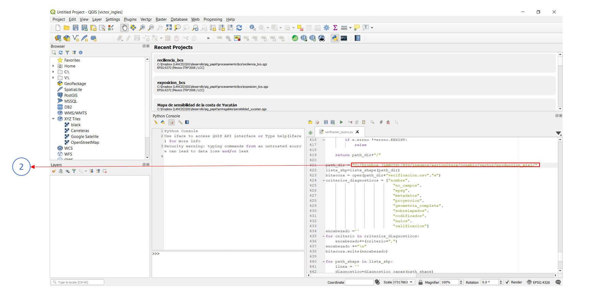

Cobertura por niveles areas¶
El objetivo de esta herramienta es cuantificar el área según el tipo de clase de uso de suelo vegetación asociado a una geometría intermedia.
para comprender mejor lo anterior se expresa el siguiente caso
se quiere conocer a nivel de municipio (geometría A), el espacio designado como Área Natural Protegida (geometria B), en dicho espacio, se requiere cuantificar el tipo de cobertura por clase de la serie de uso de suelo y vegetación de INEGI (Geometría C).
Por lo tanto, se tendrá como resultado una capa geografica a nivel municipio que en su tabla de atributos cuente con:
- Todos los campos de la capa original de municipios
- un campo del área total (expresado en hectáreas) del espacio designado como Área Natural Protegida perteneciente al municipio,
- campos nombrados como clase_# donde # corresponde al número de clase o cobertura asociado a la capa de uso de suelo y vegetación. Estos campos pueden contener el área por clase expresada en hectáreas, o bien, el porcentaje correspondiente al área total del espacio designado como Área Natural Protegida perteneciente al municipio.
Requerimientos generales¶
Para asegurar la ejecución correcta del código es importante verificar la instalación y funcionamiento de los siguientes elementos:
- Qgis 3.4 o superior
Requerimientos generales de los insumos¶
Es importante que todas las capas vectoriales cumplan con las siguientes condiciones:
- Misma proyección UTM
- Sin problemas topólogicos
Geometría A¶
- Tener un campo que contenga un identificador único para cada geometría (puede ser de tipo texto o entero)
Geometría B¶
- Tener un campo que contenga las diferentes categorias o tipos de geometria (puede ser de tipo texto o entero)
Geometría C¶
Tener el siguiente tipo de nombrado
usv_serie#_aaa.shp
Donde:
- # representa el número de serie (1,2,3,4,5 o 6) obligatorio
- _aaa representa una abreviatura del lugar, para este ejemplo se ocupa _yuc
Tener un campo de tipo entero que contenga las diferentes clases de cobertura empezando por 1, este campo debe estar presente en todas las capas de USV y debe llamarse de la misma forma
Ejemplo¶
Insumos¶
Descargar los insumos para este ejemplo aqui
1. Abrir el código¶
Abrir el código owa_raster.py en Qgis 3.4 o superior, Para resolver cualquier duda al respecto, consultar la guia
2. Ingresar la ruta de la geometria A¶
Se ingresa la ruta completa de la capa de municipios en la variable path_geometria_a
path_geometria_a = 'C:/Dropbox (LANCIS)/SIG/desarrollo/sig_fomix/entregables/mun_region/muni_2018_utm16.shp'
3. Ingresar la ruta de la geometria B¶
Se ingresa la ruta completa de la capa de Áreas Naturales Protegidas en la variable path_geometria_b
path_geometria_b = "C:/Dropbox (LANCIS)/SIG/desarrollo/sig_fomix/insumos/ambiente/sds/anps_sds/anps.shp"
4. Ingresar el directorio de las series de USV (geometría C)¶
Se ingresa la ruta del directorio donde se encutran las capas de Uso de suelo y Vegetación ** en la variable **path_dir_usv
path_dir_usv = "C:/Dropbox (LANCIS)/SIG/desarrollo/sig_fomix/entregables/usv_v2/"
5. Ingresar el directorio de salida¶
Se ingresa la ruta del directorio de salida de los datos en la variable ** path_salida**
path_salida = "C:/Dropbox (LANCIS)/SIG/desarrollo/sig_fomix/procesamiento/municipios_anp/"
en esta carpeta estarán los resultados del script, tambien se conservan los datos intermedios o productos de las intersecciones realizadas para la consulta de las áreas en una subcarpeta llamada tmp
6. Ingresar el nombre del campo ID de la capa A¶
se Ingresa el nombre del campo que contiene el identificador único para las geometrías en la variable campo_id_geometria_a, en este caso el nombre del campo es cve_mun
campo_id_geomatria_a = 'cve_mun'
7. Ingresar el nombre del campo de las categorias USV¶
Se ingresa el nombre del campo que contiene las categorias de USV en la variable ** campo_clase_usv**
campo_clase_usv = 'id_clase2'
8. Ingresar claves de las tres geometrías¶
Se declaran en una lista tres claves de las tres geometrías involucradas en la variable clave_capas
las claves son de tres caracteres y separadas por comas
clave_capas=['mun','anp','usv']